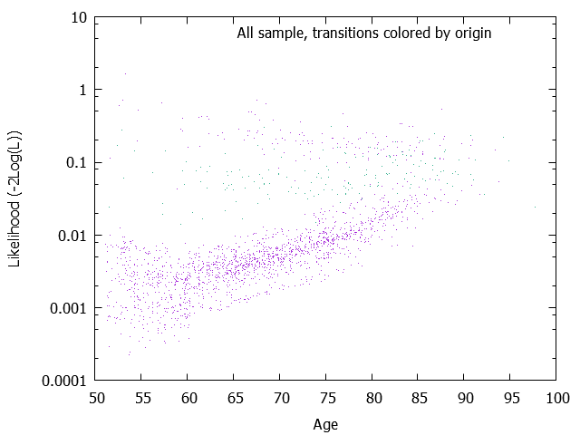
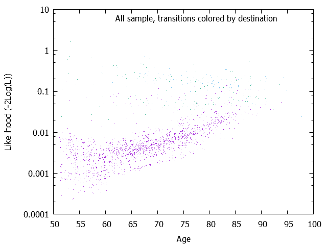
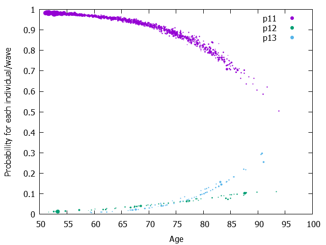
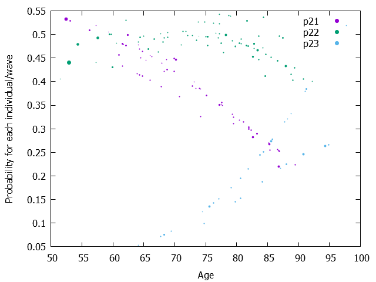

| Model= | 1 | + age |
|---|---|---|
| 12 | -7.6947224 | 0.0663622 |
| 13 | -12.6069506 | 0.1313270 |
| 21 | 1.3246458 | -0.0219788 |
| 23 | -7.3396021 | 0.0796617 |
The Wald test results are output only if the maximimzation of the Likelihood is performed (mle=1) Parameters, Wald tests and Wald-based confidence intervals W is simply the result of the division of the parameter by the square root of covariance of the parameter. And Wald-based confidence intervals plus and minus 1.96 * W It might be better to visualize the covariance matrix. See the page 'Matrix of variance-covariance of one-step probabilities and its graphs'.
| Model= | 1 | + age |
|---|---|---|
| 12 | -7.6947224 ( 0.9280074)W= -8.292[ -9.5136170; -5.8758279] | 0.0663622 ( 0.0128654)W= 5.158[ 0.0411460; 0.0915785] |
| 13 | -12.6069506 ( 1.2024623)W= -10.484[ -14.9637766; -10.2501246] | 0.1313270 ( 0.0156215)W= 8.407[ 0.1007088; 0.1619451] |
| 21 | 1.3246458 ( 1.2532898)W= 1.057[ -1.1318022; 3.7810938] | -0.0219788 ( 0.0169522)W= -1.297[ -0.0552052; 0.0112476] |
| 23 | -7.3396021 ( 2.1778766)W= -3.370[ -11.6082401; -3.0709640] | 0.0796617 ( 0.0265661)W= 2.999[ 0.0275921; 0.1317313] |